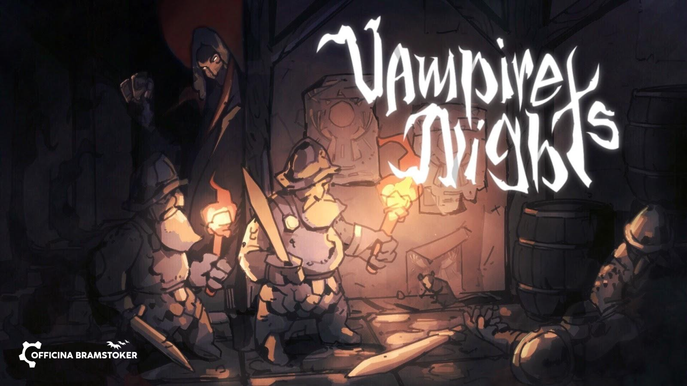
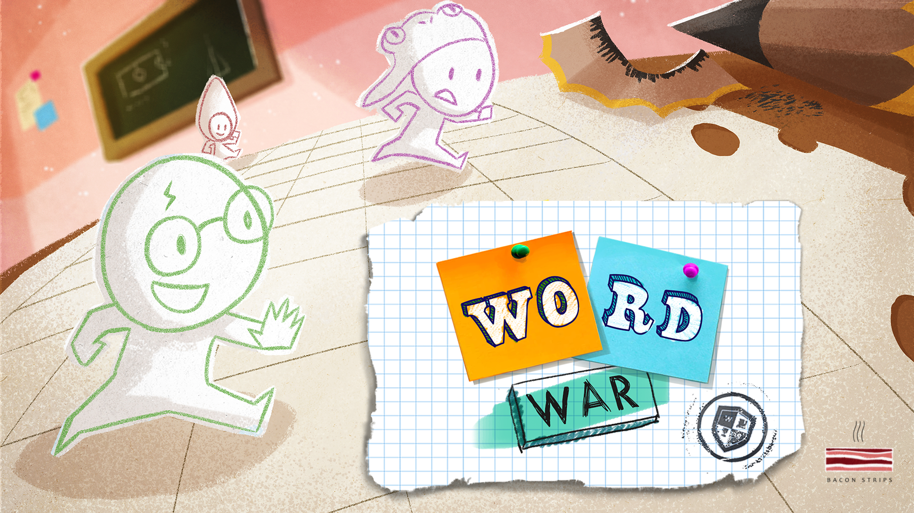
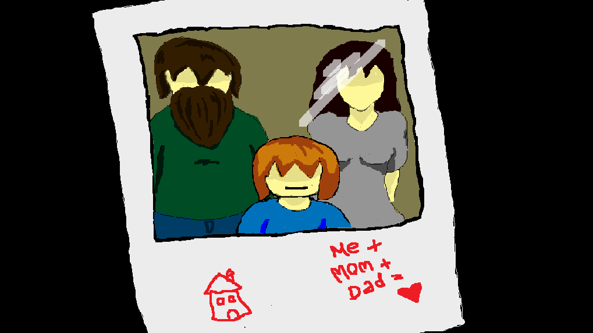
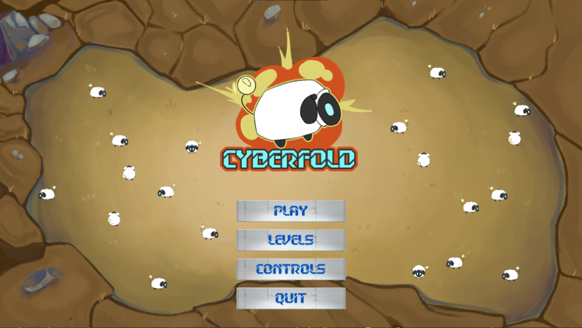
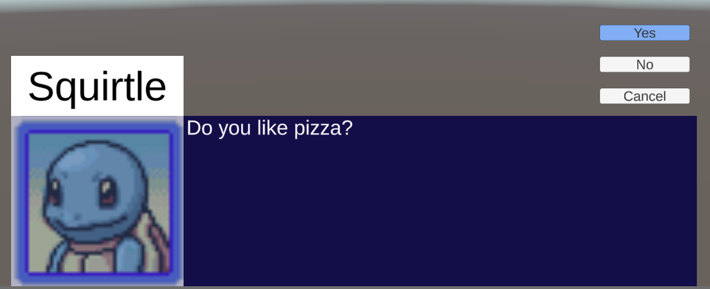

Hello, my name is Luca Palermo, i was born in Italy in 1998.
I decided to become a developer thanks to my passion for videogames. I started studying programming in high school, after which i started TheSign academy to specialize in game development.

A game that was made in 2 years at TheSign, I made the isometric rendering system, book for the main menu, map system, imported assets ecc.
LINK NOT AVAILABLE YET.
For more details and download link, click "Check out project".

I made this on my own in around a month and a half, for my final exam at TheSign. It's a rhythm game based on some japanese games that i like.
Get in touch with me (contacts down below) to have a link to the build or to have a gameplay demostration.

A game that was made in 2 years at TheSign, I joined the last year to help with the main UI system.
LINK NOT AVAILABLE YET.
For more details and download link, click "Check out project".

This game was made at a gamejam in three days using Unity. I didn't have much experience yet, but it turned out pretty well in the end.
For more details and download link, click "Check out project".

I worked on this game for three days at my first gamejam, while learning to use gamemaker for the first time. This was my first ever completed game, and i was very proud of it at the time.
For more details and download link, click "Check out project".

This was a game i worked on the first year at TheSign, while learning how to use Unity for the first time. You control a shepherd that has to move some sheeps in a specific area.
Technically I don't own this game, so i can't give a link to the project. If you want more information, feel free to contact me.

This is a dialogue system for unity made in collaboration with another programmer, it's very simple to use and easy to customize
For more details and download link, click "Check out project".
I made this system where it is possible to use the twitch chat to control a game in unity. For security reasons i can't give a link to the project, but feel free to contact me if you want more details.